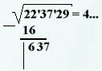
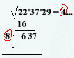

Шаг № 3
Приписываем справа к результату вычитания две цифры следующего разряда
и слева от получившегося числа ставим вертикальную черту вот так:

После этого, воспринимая цифры, стоящие после знака =, как обычное
число, умножаем его на 2 и приписываем слева от вертикальной черты,
оставив у самого края пропуск , в который ставим точку и под этой
точкой тоже ставим точку вот так:

Далее>>>